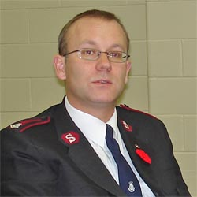
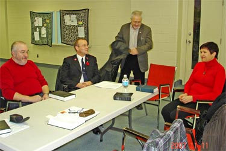
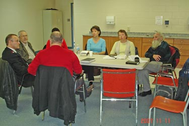

|
Major Geoff Ryan, Corps Officer, Corps 614, Toronto |
| В это воскресенье, 11 октября 2007 года, Джеф был нашем гостем на собрании русской группы. Хотя считать его гостем было бы не совсем верно: Джеф принимал активное участие в нашем вхождении и адаптации в Армии Спасения. |
|  | Он неплохо знает русский язык, потому что девять лет прожил в России. Его русский - это язык персонажей "На дне" Максима Горького, соответственно среде, где он служил для спасения погибающих. |
|  |  |